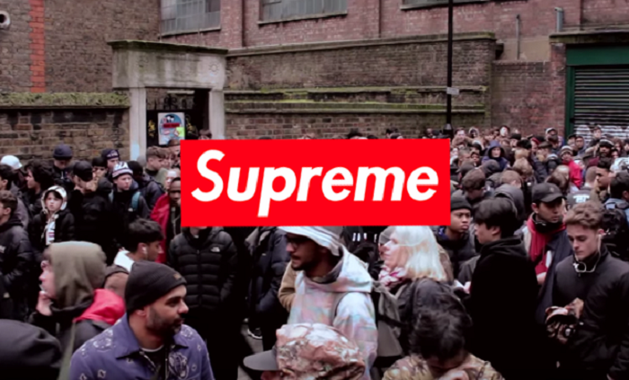
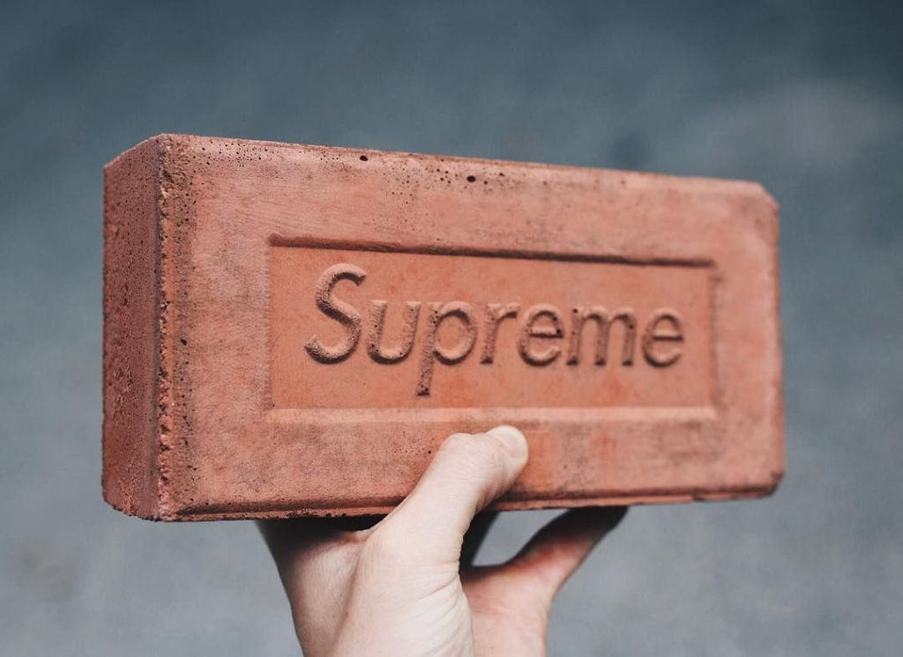
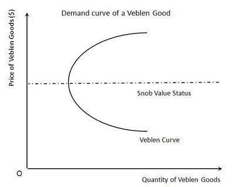

Founded in the year 1994 by the American-English businessman James Jebbia, Supreme started off as a Skate brand with its first shop located at Downtown Manhattan. Fast forward to present times, it has become one of the hottest and most sought-after streetwear brands in the world.
So what transformed a small skate store to the fashion superpower it is today?
Well, it all boiled down to one key aspect – Hype.
When Jebbia opened the first store, he began noticing an interesting trend. People were mixing and matching Luxury brands like Gucci with brands like Levis. Another phenomenon he witnessed was that people who were immersed in Hip-Hop and skate culture were also willing to pay ludicrous amounts of money for fashion. This led to one of the most successful business tactics being employed that propelled supreme to the brand it is today.
The scarcity model involves two important aspects of Economics, Supply, and Demand. Usually, keeping all other factors constant, an increase in demand would lead to an increase in supply as companies use the enhanced demand as a price signal to increase their output to maximise their profit.
In a stroke of brilliance, Supreme decided to limit supply and boost the demand for their products bringing about a high ‘rejection rate’. Employing a ‘drop culture’, it dropped a limited amount of product which was sold on their online store and in their shops. Once it was sold out however, it was no longer directly sold by Supreme. This lead to a much more prominent presence in secondary markets where resale prices are many times the original cost. Some examples include their brick which saw a 400% increase in price in the resale market.
The Supreme brick
This phenomenon is by no means new. In 1899, Norwegian-American economist Thorstein Veblen coined the term Conspicuous Consumption as the purchase of goods or services for the specific purpose of displaying one’s wealth.
Such consumption often leads to the emergence of what economists refer to as ‘’Veblen goods’’. For these goods, unlike regular goods, as the price increases, the quantity demanded also increases. High fashion goods are the most notable of Veblen goods including Rolex watches and Gucci handbags.
Illustration of Veblen Goods
In spite of its recent success, Supreme is now at risk of growing too fast and collapsing entirely. Recently a company called the Carlyle Group invested nearly 500 million USD, which now values Supreme at 1 billion USD. People are now apprehensive that the involvement of multi-billion dollar corporations in what was considered a niche industry could spell trouble for the brand.
In what began as a cultural phenomenon which revolved around skating, high fashion and hip-hop, Supreme is undoubtedly one of the most fascinating brands of all time. However, with growing fears of Supreme pushing too many products and flooding the market to make a quick profit, the future of Supreme seems uncertain.